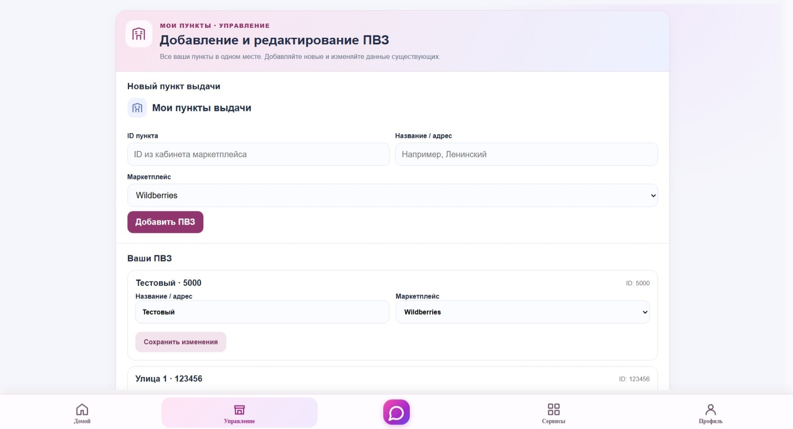
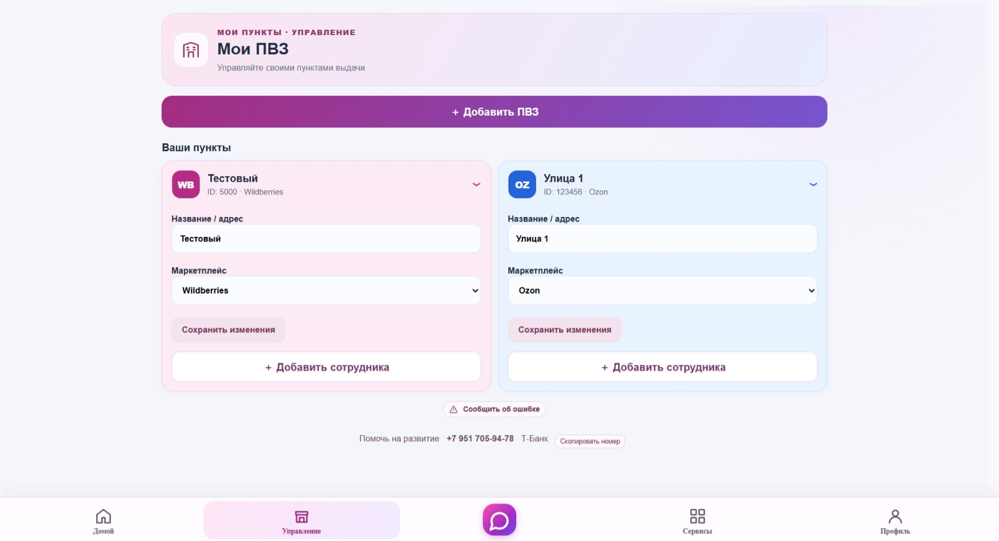

Эд ИИ в конструкторе обращений
В конструкторе появился подбор тем по свободному описанию. Когда языковая модель недоступна, темы можно подобрать локальным поиском.
Обновлённое управление ПВЗ
- Раздел «Мои ПВЗ» получил компактные цветные карточки маркетплейсов вместо больших форм.
- Добавление и редактирование пунктов теперь раскрываются по нажатию.
- Из карточки пункта можно пригласить сотрудника.


Связь с разработчиком и больше объявлений
- В верхней части главной страницы появилась кнопка «Контакты разработчика».
- В новом окне можно перейти в Telegram, открыть MAX и скопировать номер для поиска или позвонить разработчику напрямую.
- Контакты доступны пользователям на телефоне и компьютере.
- Расширен список источников в разделе «Работа»: ещё больше вакансий, предложений по заменам и подработкам, а также резюме сотрудников ПВЗ.